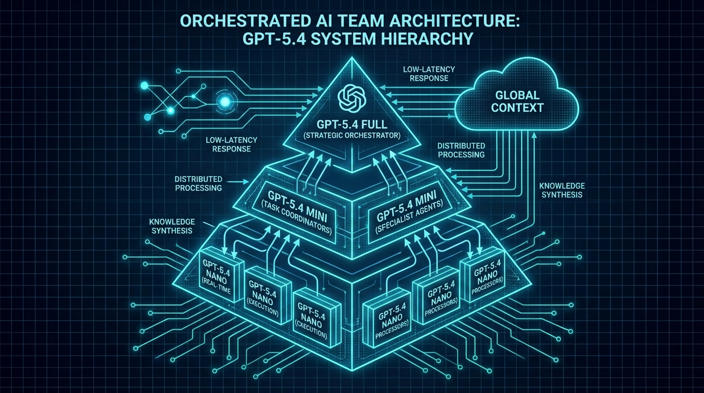

OpenAI just dropped two new models that, on the surface, look like incremental updates. GPT-5.4 mini and nano. Smaller. Faster. Cheaper. Yawn, right? Wrong. These releases signal something far more significant: the shift from monolithic AI to orchestrated AI teams. And that's going to change how every application gets built.
The Speed Breakthrough
Let's start with the headline numbers. GPT-5.4 mini is over twice as fast as its predecessor while delivering performance close to the full GPT-5.4 model on benchmarks—including coding tasks like SWE-Bench Pro. We're talking about a model that can process and respond in real-time, without the latency that makes larger models feel sluggish in interactive applications.
The nano variant is API-only and designed for high-speed, low-cost tasks. Think classification, summarization, entity extraction—workhorse tasks that don't need the full reasoning capability of a frontier model but absolutely need to be fast and cheap.
The Orchestration Strategy
Here's where it gets interesting. OpenAI isn't positioning these as replacements for GPT-5.4. They're positioning them as team members. The vision is an "orchestrated AI teams" approach where:
- Larger models (GPT-5.4, GPT-5.4 Thinking) handle complex planning, reasoning, and high-stakes decisions
- Mini models handle execution of specific subtasks that need speed and efficiency
- Nano models handle high-volume, low-complexity operations at minimal cost
This is how human teams work. You don't have your CEO writing every email. You have specialists who handle specific functions under strategic direction. OpenAI is building the same architecture for AI systems.

The Anthropic Challenge
Make no mistake—this is a direct shot at Anthropic's Claude Code. The AI software engineering market is heating up, and OpenAI wants to own it. By offering a spectrum of models from nano to full GPT-5.4, they're giving developers granular control over the speed/cost/quality tradeoff.
Claude has built a reputation for reliability in coding tasks. But OpenAI's new small models are challenging that dominance with raw speed. When you can get near-Claude performance at twice the speed and a fraction of the cost, the economics start looking very attractive.
What Developers Actually Get
For developers building on OpenAI's platform, this changes the game:
Cost optimization becomes granular. Instead of using GPT-5.4 for everything and accepting the cost, you can route tasks to the smallest model that can handle them. Classification? Nano. Complex reasoning? Full GPT-5.4. The middle ground? Mini.
Latency becomes manageable. Real-time applications—chatbots, live coding assistants, interactive tools—can now use mini for the bulk of interactions while escalating to larger models only when necessary.
Architecture becomes compositional. The best applications won't use a single model. They'll use a router that dispatches to nano, mini, or full models based on task complexity. We're moving from "which model should I use?" to "how should I orchestrate my AI team?"
The Bigger Picture
This release is part of a broader pattern. OpenAI has been systematically filling out its model spectrum:
- GPT-5.4 Thinking (March 5) for high-performance reasoning
- GPT-5.3 Instant (March 3) for everyday conversations
- GPT-5.4 mini/nano (March 17) for speed and cost efficiency
The strategy is clear: own every point on the quality/speed/cost curve. No matter what you're building, OpenAI wants to have the right model for your use case.
The Implications for Startups
If you're building an AI startup right now, you need to think about orchestration. The competitive advantage won't come from using GPT-5.4 for everything. It'll come from intelligent routing—knowing when to use nano versus mini versus the full model.
The companies that master this orchestration will deliver better user experiences at lower costs than competitors who treat AI as a monolithic black box. They'll be faster, cheaper, and more reliable.
OpenAI just gave us the tools. The winners will be the ones who figure out how to conduct the orchestra.